Random Forests
William Richardson, Wade Lieurance
11/27/2019

NOTE: you can download the R code here
1 Introduction
What are Random Forests?*
An ensemble learning method utilizing multiple decision trees at training time and outputting the class that is the mode or mean of the individual trees.
Ensemble learning is the process by which multiple models, such as classifiers or experts, are strategically generated and combined to solve a particular computational intelligence problem.
In short, a random forest is a predictive, non-linear, computational algorithm based on decision trees.
OK… so what’s a Decision Tree* then?*
Woah there pardner! Don’t put the CART before the horse!

In this case, CART is an acronym for Classification and Regression Trees.
Originally described in (Breiman 1984), a classification tree is a partitioning of categorical data and a regression tree is a partitioning of continuous numerical data.
These split partitions or regions aim to maximize the homogeneity of the target variable.
2 Thinking about Partitioning
If we wanted to maximize homogeneity of a continuous response variable by dividing it into regions, how might we go about that?
2.1 Simple Example: Quantiles
Lets look at one of the example data sets in R: mtcars.
| mpg | cyl | disp | hp | drat | wt | qsec | vs | am | gear | carb | |
|---|---|---|---|---|---|---|---|---|---|---|---|
| Mazda RX4 | 21.0 | 6 | 160 | 110 | 3.90 | 2.620 | 16.46 | 0 | 1 | 4 | 4 |
| Mazda RX4 Wag | 21.0 | 6 | 160 | 110 | 3.90 | 2.875 | 17.02 | 0 | 1 | 4 | 4 |
| Datsun 710 | 22.8 | 4 | 108 | 93 | 3.85 | 2.320 | 18.61 | 1 | 1 | 4 | 1 |
| Hornet 4 Drive | 21.4 | 6 | 258 | 110 | 3.08 | 3.215 | 19.44 | 1 | 0 | 3 | 1 |
| Hornet Sportabout | 18.7 | 8 | 360 | 175 | 3.15 | 3.440 | 17.02 | 0 | 0 | 3 | 2 |
mpg = Miles/(US) gallon, cyl = Number of cylinders, disp = Displacement (cu.in.), hp = Gross horsepower, drat = Rear axle ratio, wt = Weight (1000 lbs), qsec = 1/4 mile time, vs = Engine (0 = V-shaped, 1 = straight), am = Transmission (0 = automatic, 1 = manual), gear = Number of forward gears, carb = Number of carburetors.
Let’s take a look at mpg as a response variable to disp and fit a linear model to it. 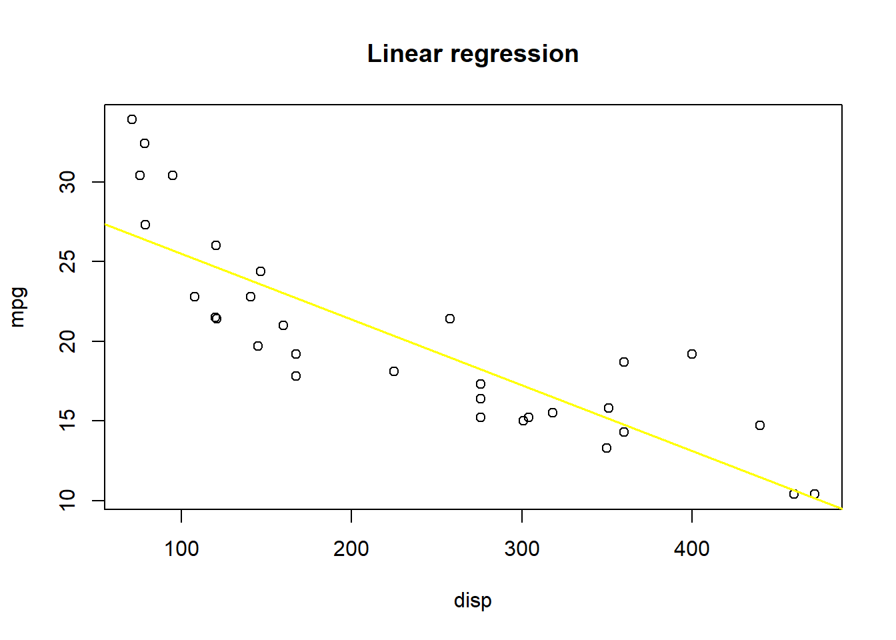
SSE: 317.2
What sort of gain do we get if we partition the data set into R = 4 regions and calculate a mean?
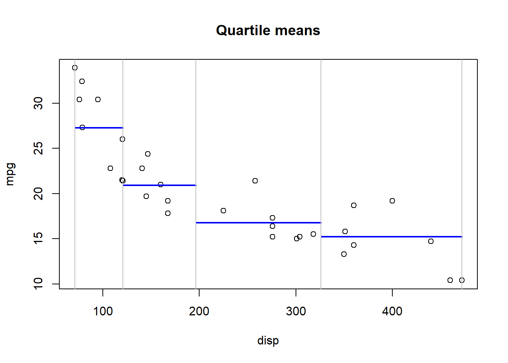
SSE: 220.5
Can we improve our SSE gain if we partition the data set into R = 10 regions?
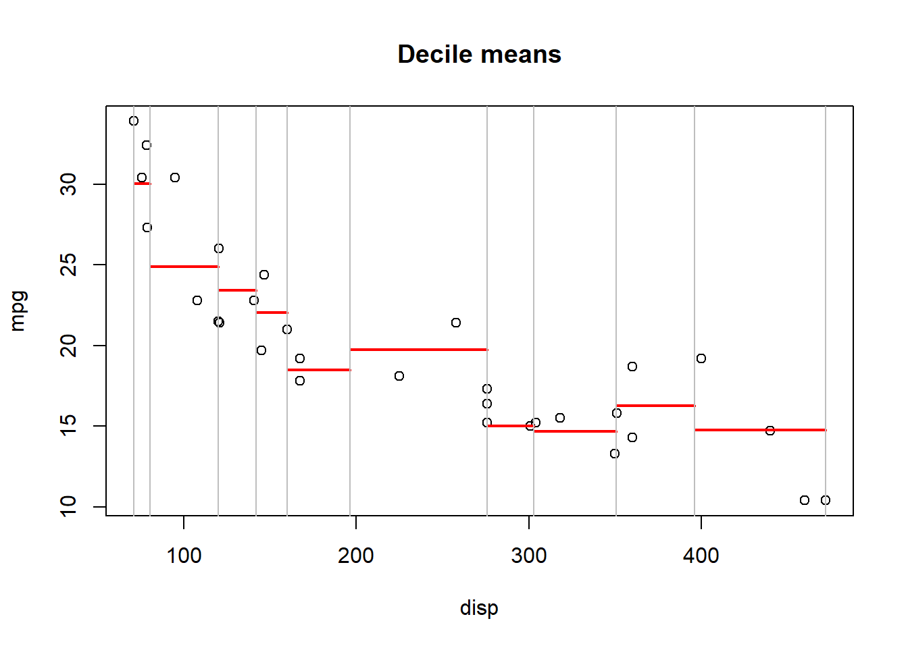
SSE: 139.6
What about R = n regions (where n = unique(x))?
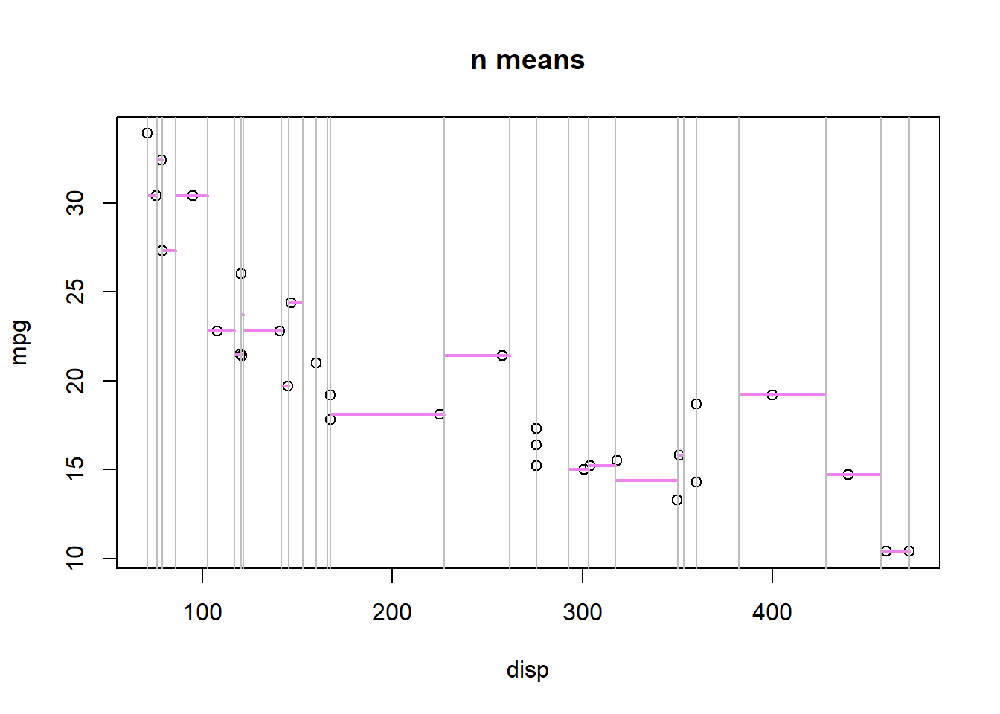
SSE: 13
We could go even further by fitting linear models to each region instead of just taking the mean of region R.
Simple partitioning - Some drawbacks
- Clearly easy to over fit the data based on the number of partitions chosen (low bias, large variance).
- How do we decide how many partitions to use to maximize the utility of the partition?
- What if we wanted some way to partition disp that isn’t based on quantiles? Something more flexible?
- What if we had many possible predictor variables (as in this case), some continuous and some categorical? Where would we partition?
2.2 Decision Trees - A partial solution…
2.2.1 Binary Splitting with Continuous Response (Regression Trees)
We can use binary splitting to brute force selection of regions R.
If we break x = displacement between every possible break point and calculate the squared estimate of errors for regions left of the break and right of the break and add them, we can determine which breaking point results in the minimal SSE.
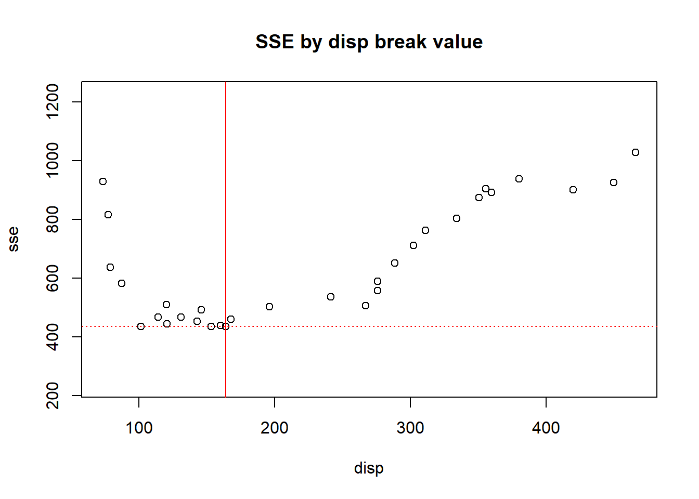
If we then plot this regional break on out mpg ~ disp plot we get:
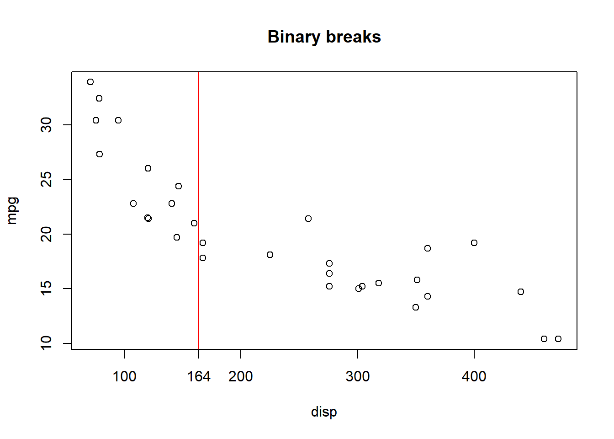
If we continue to partition regions R1 and R2 into sub-partitions, and those into even further partitions, we can see the result:
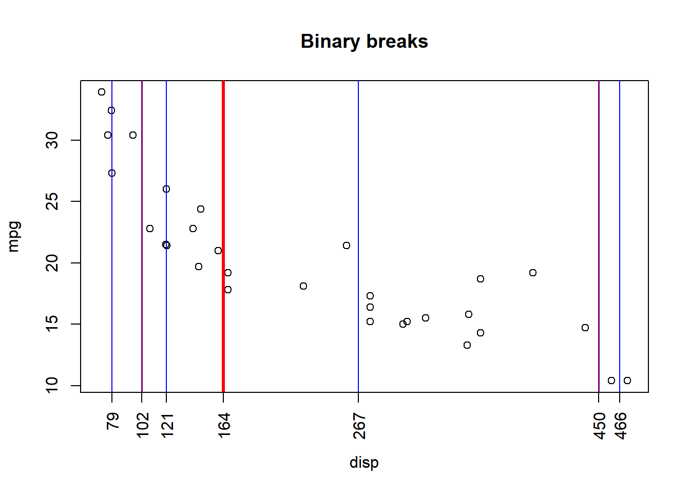
We can visualize this process through a decision tree diagram and with the help of the rpart library!
library(rpart)
library(rpart.plot)
tree <- rpart(formula = mpg~disp, data = mtcars,
control = rpart.control(maxdepth = 3, minbucket = 1, cp = 0))
prp(tree, faclen = 0, cex = 0.8, extra = 1)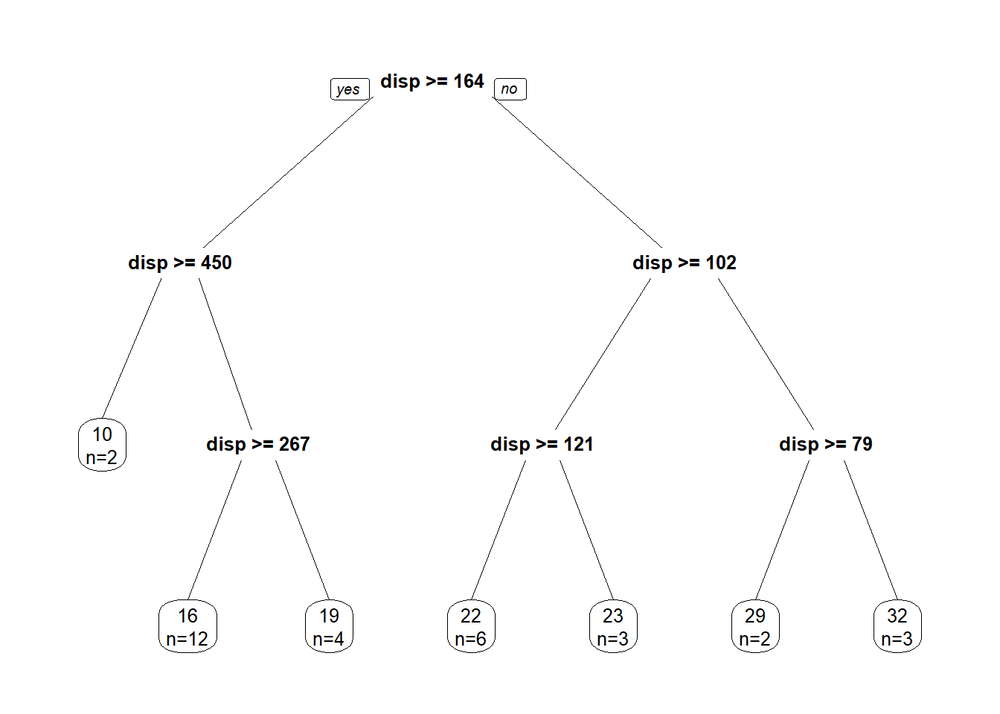
Decision trees have 4 different parts:
- Root Node
- Internal Nodes
- Branches
- Leaf Nodes
In the above regression tree, we have passed some control variables to rpart() in order to control how our tree is grown. In this case:
- maxdepth = 3 tells rpart to grow our tree to a depth of 3 (or to split 3 times).
- minbucket = 1 tells rpart that the minimum n for a leaf node is 1
- cp = 0 is a complexity parameter.
The complexity parameter cp (or \(\alpha\)) specifies how the cost of a tree \(C(T)\) is penalized by the number of terminal nodes \(|T|\), resulting in a regularized cost \(C_{\alpha}(T)\)
Thus:
\(C_{\alpha}(T) = C(T) + \alpha|T|\)
Small \(\alpha\) results in lartger trees with potential overfitting. Large \(\alpha\) in small trees an potential underfitting. In practice, setting cp = 0 sets a cost of 0 to new branches of our tree, meaning there is no penalized cost for adding nodes.
Higher values ‘pre-prune’ our tree, ignoring splits that don’t meet a minimum target for increased homogeneity at a certain node depth.
There are many control parameters we can pass to rpart to determine how the tree is grown!
2.2.2 Binary Splitting with Multiple Variables
What if we wanted to partition our data according to multiple input variables?
Luckily this algorithm is not restricted to a single partitioning variable!
Conceptually the process can be thought of thus:
- For each variable k, determine the minimum SSE for the first split.
- Compare these SSEs from all k
- Create the root node from the k split that gives min(SSE).
- Repeat steps 1-3 on the newly branched nodes for all k.
While we could expand our binary splitting algorithms from above to produce these results, lets take advantage of rpart!
Lets use a fancier plotting library this time.
library(rattle)
library(RColorBrewer)
tree <- rpart(formula = mpg~disp+wt, data = mtcars,
control = rpart.control(maxdepth = 3, minbucket = 1, cp = 0))
fancyRpartPlot(tree, caption = NULL)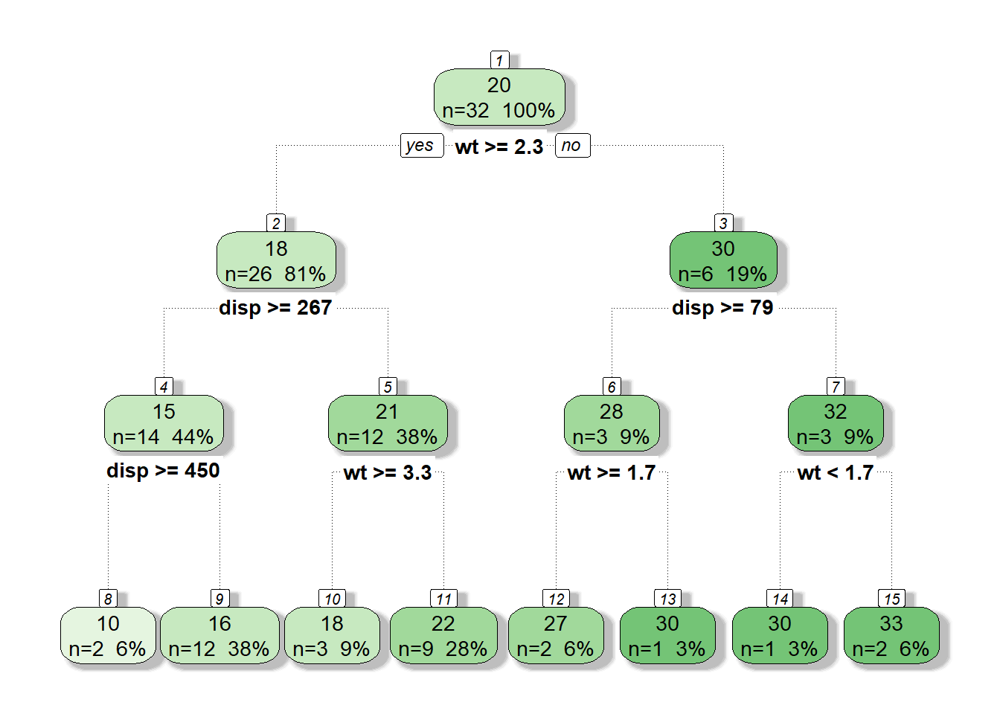
What would this look like if we plotted mpg by both displacement and weight and added the nodes from our tree?
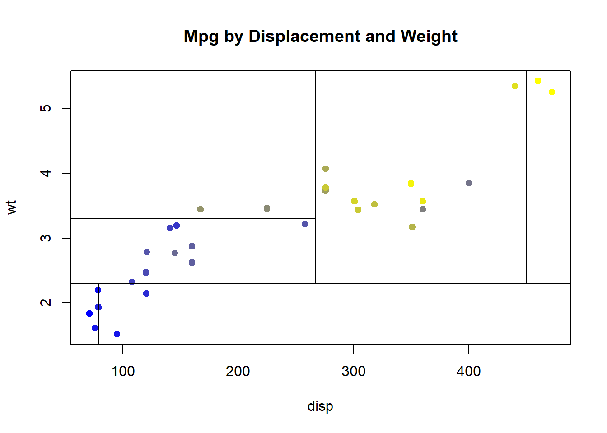
And if we used many more predictor variables?
tree.m <- rpart(formula = mpg~disp+wt+cyl+drat+vs+am+gear+carb, data = mtcars,
control = rpart.control(maxdepth = 3, minbucket = 1, cp = 0))
fancyRpartPlot(tree.m, caption = NULL)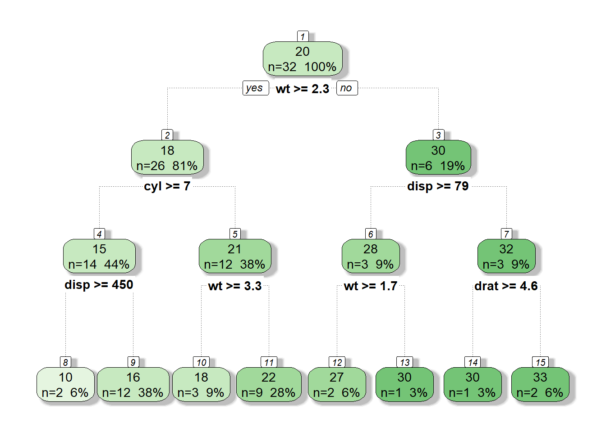
2.2.3 Categorical Response (Classification Trees)
What if we had a categorical response variable? CART algorithms handle these as well!
Lets modify our mtcars example and change mpg to a categorical variable.
mtcars.class <- mutate(mtcars,
mpg = case_when(mpg < 16.7 ~ "low",
mpg >= 16.7 & mpg < 21.4 ~ "medium",
mpg >= 21.4 ~ "high"))
kable(mtcars.class[1:7,], caption = "mtcars (classified)")| model | mpg | cyl | disp | hp | drat | wt | qsec | vs | am | gear | carb |
|---|---|---|---|---|---|---|---|---|---|---|---|
| Mazda RX4 | medium | 6 | 160 | 110 | 3.90 | 2.620 | 16.46 | 0 | 1 | 4 | 4 |
| Mazda RX4 Wag | medium | 6 | 160 | 110 | 3.90 | 2.875 | 17.02 | 0 | 1 | 4 | 4 |
| Datsun 710 | high | 4 | 108 | 93 | 3.85 | 2.320 | 18.61 | 1 | 1 | 4 | 1 |
| Hornet 4 Drive | high | 6 | 258 | 110 | 3.08 | 3.215 | 19.44 | 1 | 0 | 3 | 1 |
| Hornet Sportabout | medium | 8 | 360 | 175 | 3.15 | 3.440 | 17.02 | 0 | 0 | 3 | 2 |
| Valiant | medium | 6 | 225 | 105 | 2.76 | 3.460 | 20.22 | 1 | 0 | 3 | 1 |
| Duster 360 | low | 8 | 360 | 245 | 3.21 | 3.570 | 15.84 | 0 | 0 | 3 | 4 |
While we can attempt to minimize SSE for a continuous response variable, we need a different method for categorical response variables.
The two methods used in rpart are:
- Gini impurity (default)
- Information gain
Lets have a look a Gini impurity as its description is more straightforward.
With a set of items with \(J\) classes, \(i \in \{1,2,...,J\}\) and \(p_{i}\) being the fraction labeled with class \(i\) in the set. Then the Gini impurity can be calculated as the following:
\[I_{G}(p) =\sum_{i = 1}^Jp_{i}\sum_{k \neq i}p_{k} =\sum_{i = 1}^J p_{i}(1 - p_{i})\] As a simple example lets say we have the following data set:
set <- c("horse", "horse", "cart", "cart", "cart")
set## [1] "horse" "horse" "cart" "cart" "cart"then the Gini impurity would be:
p.horse <- length(set[set == "horse"])/length(set) # 2/5
p.cart <- length(set[set == "cart"])/length(set) # 3/5
I <- (p.horse * (1-p.horse))+ (p.cart * (1-p.cart))
I # 0.48## [1] 0.48or \(0.4 * (1 - 0.4) + 0.6 * (1 - 0.6) = 0.4*0.6 + 0.6 * 0.4 = 0.24 + 0.24 = 0.48\)
Gini impurity is a measure of impurity, so what would happen if our set is composed of just one class? Then:
\(1*(1-1) + 0*(1-0) = 0 + 0 = 0\)
So we then can use a decrease in Gini impurity to classify whether a split is a good choice. We do this by calculating the Gini Gain. Lets say we split the above set into two shabby groups:
set.1 <- c("horse", "cart")
set.2 <- c("horse", "cart", "cart")
I.1 <- (0.5*(1-0.5)) + (0.5*(1-0.5)) # 0.5
I.2 <- (1/3 * (1 - 1/3)) + (2/3 * (1 - 2/3)) # 0.44
I.1## [1] 0.5I.2## [1] 0.4444444We can then take the sum of the Gini Impurity for each group, weighted by the number of members of each group.
I.new <- (I.1 * length(set.1)/length(set)) + (I.2 * length(set.2)/length(set))
I.new## [1] 0.4666667I.gain <- I - I.new
I.gain## [1] 0.01333333I this case our split is only marginally better than the unsplit data. If we were to change our node groupings to pure horses and carts, what sort of gain would we get? Well, we know that a homogeneous group has a Gini impurity of zero, so: \(0.4 * 0 + 0.6 * 0 = 0\) and thus \(0.48 - 0 = 0.48\), a significant gain!
Knowing this, lets take a look at a classification tree for our modified mtcars data set:
tree.class <- rpart(formula = mpg~disp+wt+hp+vs+gear, data = mtcars.class,
control = rpart.control(maxdepth = 3, minbucket = 1, cp = 0))
fancyRpartPlot(tree.class, caption = NULL)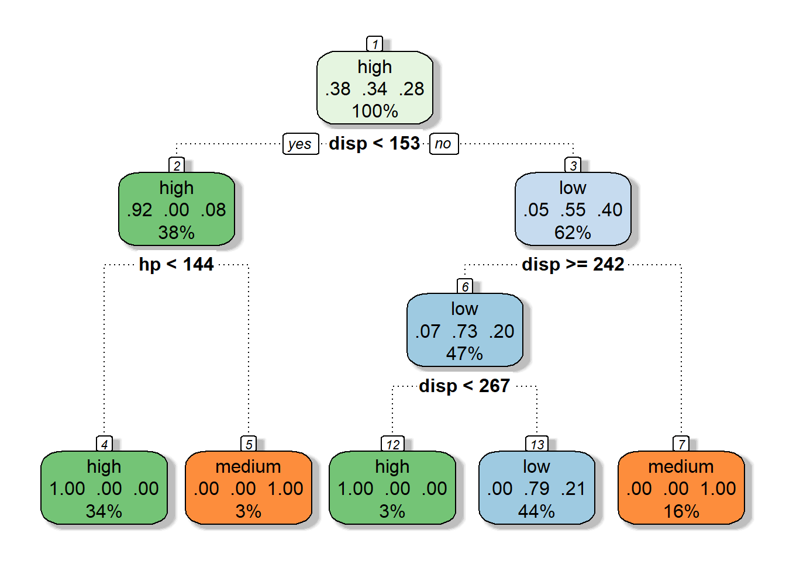
What other types of methods are available in rpart?
- Categorical - method==“class”
- Continuous - method==“anova”
- PoissonProcess/Count - method==“poisson”
- Survival - method==“exp”
2.2.4 Tree Complexity and Pruning
So far we have built a regression tree and a classification tree and given both a depth of n = 3 (three splits). But we have yet to address if our tree is a good fit for our data. How do we address this? How do we prevent over-fitting?
We can use k-fold cross validation and select the split that gives the minimum CV error. rpart does this cross validation automatically (n=10) for us, which we can see the results of via printcp()
printcp(tree)##
## Regression tree:
## rpart(formula = mpg ~ disp + wt, data = mtcars, control = rpart.control(maxdepth = 3,
## minbucket = 1, cp = 0))
##
## Variables actually used in tree construction:
## [1] disp wt
##
## Root node error: 1126/32 = 35.189
##
## n= 32
##
## CP nsplit rel error xerror xstd
## 1 0.6526612 0 1.000000 1.06204 0.25329
## 2 0.1947024 1 0.347339 0.62690 0.19928
## 3 0.0457737 2 0.152636 0.35042 0.12332
## 4 0.0250138 3 0.106863 0.34204 0.12013
## 5 0.0232497 4 0.081849 0.31209 0.11951
## 6 0.0083256 5 0.058599 0.26375 0.10245
## 7 0.0044773 6 0.050274 0.26762 0.10460
## 8 0.0000000 7 0.045796 0.25698 0.10471The rule of thumb is that we sum the minimum cross-validation error (xerror) and the xstd field and then choose the lowest nsplit where xerror that is >= the sum of these values. In this case, min(xerror) + xstd =
0.22539 + 0.05324## [1] 0.27863In this case the min nsplit that has a cross validation error less than 0.27863 is nsplit = 4 and CP = 0.0121987. We can choose a cp for pruning which is slightly greater (0.013)
tree.p <- prune(tree, cp = 0.013)
fancyRpartPlot(tree.p, caption = NULL)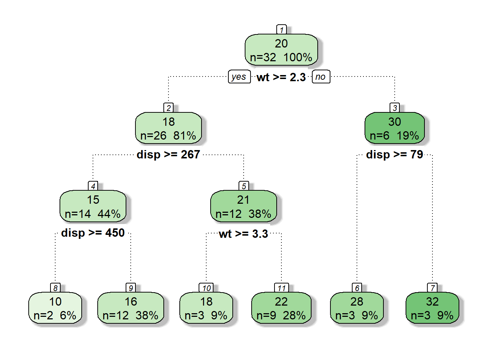
2.3 Example: Regression Trees
2.3.1 Creating the Model: Ames Housing Data Set

We wanted a data set that had a high number of variables and data points.
The Ames Housing data set has 82 fields and 2,930 properties all from Ames, IA.
Some other good data sets are:
- Package: SwissAir
- Data: AirQual
- Package: lme4
- Data: Arabidopsis
- Package: PASwr
- Data: titanic3
Some of the variables include:
- Lot Area
- Lot Shape
- Utilities
- House Style
- Roof Style
- Number of Car Garage
- Pool area
- House Condition
How do these variables affect sales price? Let’s find out!!!
First let’s create a model.
These are the base packages you will need.
library(rsample)
library(dplyr)
library(rpart)
library(rpart.plot)
library(ModelMetrics)You should separate the data into training and test data using the ‘initial_split()’ function.
Additionally we will be setting a seed so that the data is split the same way each time.
set.seed(123)
ames_split <- initial_split(AmesHousing::make_ames(), prop = .7)
ames_train <- training(ames_split)
ames_test <- testing(ames_split)Now, let’s set up a model!!!!
m1 <- rpart(
formula = Sale_Price ~ .,
data = ames_train,
method = "anova"
)Let’s look at the output.
m1## n= 2051
##
## node), split, n, deviance, yval
## * denotes terminal node
##
## 1) root 2051 1.273987e+13 180775.50
## 2) Overall_Qual=Very_Poor,Poor,Fair,Below_Average,Average,Above_Average,Good 1703 4.032269e+12 156431.40
## 4) Neighborhood=North_Ames,Old_Town,Edwards,Sawyer,Mitchell,Brookside,Iowa_DOT_and_Rail_Road,South_and_West_of_Iowa_State_University,Meadow_Village,Briardale,Northpark_Villa,Blueste 1015 1.360332e+12 131803.50
## 8) First_Flr_SF< 1048.5 611 4.924281e+11 118301.50
## 16) Overall_Qual=Very_Poor,Poor,Fair,Below_Average 152 1.053743e+11 91652.57 *
## 17) Overall_Qual=Average,Above_Average,Good 459 2.433622e+11 127126.40 *
## 9) First_Flr_SF>=1048.5 404 5.880574e+11 152223.50
## 18) Gr_Liv_Area< 2007.5 359 2.957141e+11 145749.50 *
## 19) Gr_Liv_Area>=2007.5 45 1.572566e+11 203871.90 *
## 5) Neighborhood=College_Creek,Somerset,Northridge_Heights,Gilbert,Northwest_Ames,Sawyer_West,Crawford,Timberland,Northridge,Stone_Brook,Clear_Creek,Bloomington_Heights,Veenker,Green_Hills 688 1.148069e+12 192764.70
## 10) Gr_Liv_Area< 1725.5 482 5.162415e+11 178531.00
## 20) Total_Bsmt_SF< 1331 352 2.315412e+11 167759.00 *
## 21) Total_Bsmt_SF>=1331 130 1.332603e+11 207698.30 *
## 11) Gr_Liv_Area>=1725.5 206 3.056877e+11 226068.80 *
## 3) Overall_Qual=Very_Good,Excellent,Very_Excellent 348 2.759339e+12 299907.90
## 6) Overall_Qual=Very_Good 249 9.159879e+11 268089.10
## 12) Gr_Liv_Area< 1592.5 78 1.339905e+11 220448.90 *
## 13) Gr_Liv_Area>=1592.5 171 5.242201e+11 289819.70 *
## 7) Overall_Qual=Excellent,Very_Excellent 99 9.571896e+11 379937.20
## 14) Gr_Liv_Area< 1947 42 7.265064e+10 325865.10 *
## 15) Gr_Liv_Area>=1947 57 6.712559e+11 419779.80
## 30) Neighborhood=Old_Town,Edwards,Timberland 7 8.073100e+10 295300.00 *
## 31) Neighborhood=College_Creek,Somerset,Northridge_Heights,Northridge,Stone_Brook 50 4.668730e+11 437207.00
## 62) Total_Bsmt_SF< 2168.5 40 1.923959e+11 408996.90 *
## 63) Total_Bsmt_SF>=2168.5 10 1.153154e+11 550047.30 *The tree looks like this.
rpart.plot(m1)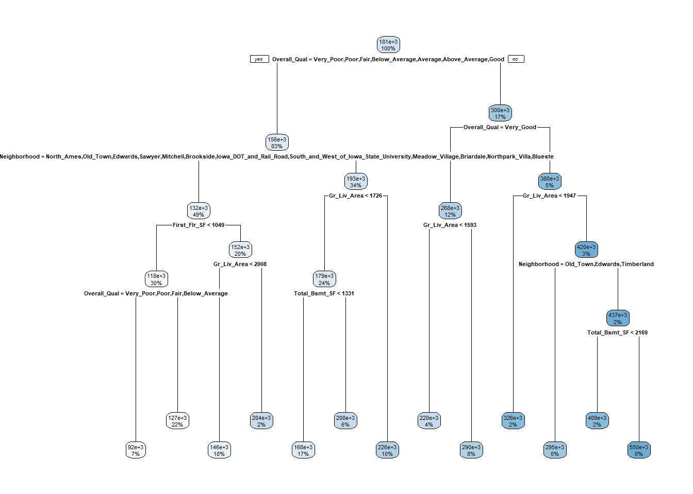
The ‘rpart()’ function automatically applies a range of cost complexity.
Remember that the cost complexity parameter penalizes our model for every additional terminal node of the tree.
\(minimize(SSE + ccp*T)\)
plotcp(m1)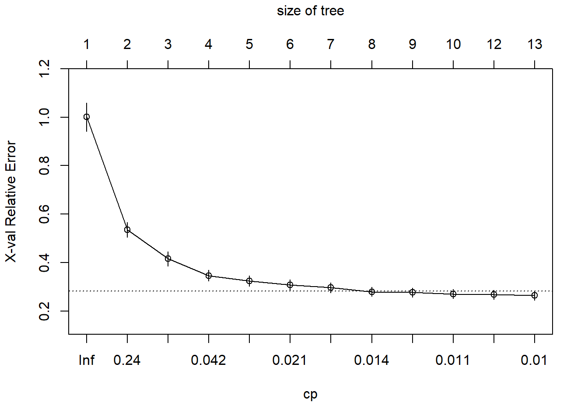
(Breiman 1984) suggests that it’s common practice to use the smallest tree within 1 standard deviation of the minimum cross validation error.
We can see what would happen if we generate a full tree. We do this by using ‘cp = 0’.
m2 <- rpart(
formula = Sale_Price ~ .,
data = ames_train,
method = "anova",
control = list(cp = 0, xval = 10)
)
plotcp(m2)
abline(v = 12, lty = "dashed")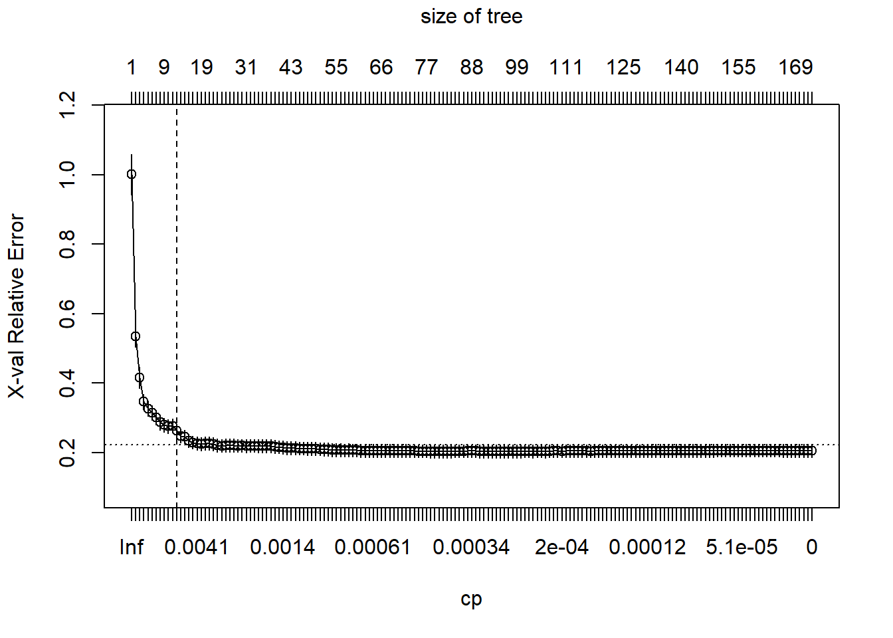
So we see that rpart does some initial pruning on its own. However, we can go deeper!!!!!!
2.3.2 Tuning
Two common tuning tools used besides the cost complexity parameter are:
minsplit: The minimum number of data points required to attempt a split before it is forced to create a terminal node. Default is 20.maxdepth: The maximum number of internal nodes between the root node and the terminal nodes.
Let’s mess with these variables!!!!
m3 <- rpart(
formula = Sale_Price ~ .,
data = ames_train,
method = "anova",
control = list(minsplit = 10, maxdepth = 12, xval = 10)
)
m3$cptable## CP nsplit rel error xerror xstd
## 1 0.46690132 0 1.0000000 1.0004448 0.05850012
## 2 0.11961409 1 0.5330987 0.5343156 0.03093134
## 3 0.06955813 2 0.4134846 0.4148699 0.03035832
## 4 0.02559992 3 0.3439265 0.3455539 0.02190359
## 5 0.02196620 4 0.3183265 0.3259151 0.02168056
## 6 0.02023390 5 0.2963603 0.3062045 0.02114604
## 7 0.01674138 6 0.2761264 0.3061135 0.02176061
## 8 0.01188709 7 0.2593850 0.2917534 0.02058535
## 9 0.01127889 8 0.2474980 0.2872380 0.02441006
## 10 0.01109955 9 0.2362191 0.2850234 0.02440721
## 11 0.01060346 11 0.2140200 0.2829790 0.02334151
## 12 0.01000000 12 0.2034165 0.2735069 0.02260957We can perform a hyperparameter grid to determine the best values for these parameters.
hyper_grid <- expand.grid(
minsplit = seq(5, 20, 1),
maxdepth = seq(8, 15, 1)
)
head(hyper_grid)## minsplit maxdepth
## 1 5 8
## 2 6 8
## 3 7 8
## 4 8 8
## 5 9 8
## 6 10 8nrow(hyper_grid)## [1] 128Now let’s run a for loop to determine what are the best values!!!
models <- list()
for (i in 1:nrow(hyper_grid)) {
minsplit <- hyper_grid$minsplit[i]
maxdepth <- hyper_grid$maxdepth[i]
models[[i]] <- rpart(
formula = Sale_Price ~ .,
data = ames_train,
method = "anova",
control = list(minsplit = minsplit, maxdepth = maxdepth)
)
}Let’s use some data wrangling and handy dandy R to figure out the top 5 sequences of values which would produce the lowest error values.
get_cp <- function(x) {
min <- which.min(x$cptable[, "xerror"])
cp <- x$cptable[min, "CP"]
}
get_min_error <- function(x) {
min <- which.min(x$cptable[, "xerror"])
xerror <- x$cptable[min, "xerror"]
}
hyper_grid %>%
mutate(
cp = purrr::map_dbl(models, get_cp),
error = purrr::map_dbl(models, get_min_error)
) %>%
arrange(error) %>%
top_n(-5, wt = error)## minsplit maxdepth cp error
## 1 16 12 0.01060346 0.2628987
## 2 6 11 0.01000000 0.2645615
## 3 11 11 0.01000000 0.2650862
## 4 10 10 0.01000000 0.2655860
## 5 7 15 0.01000000 0.2656602If we are satisfied, we can use these values and create a new model. With this model, we can predict the sales prices of the test data.
optimal_tree <- rpart(
formula = Sale_Price ~ .,
data = ames_train,
method = "anova",
control = list(minsplit = 11, maxdepth = 8, cp = 0.01)
)
pred <- predict(optimal_tree, newdata = ames_test)
rmse(pred = pred, actual = ames_test$Sale_Price)## [1] 39852.013 Ensemble Methods
3.1 Bootstrap Aggregating (or Bagging)
3.1.1 Overview
In our previous interaction with the mtcars data set, we fitted a tree and used k-fold cross validation to prune the tree in order to prevent over-fitting.
One similar but slightly different technique is an ensemble method called bootstrap aggregating or bagging.
In k-fold cross validation, our sample is divided into k samples where the \(k_{}i\) sample is set aside for prediction and the \(k_{j \neq i}\) samples are use for training data, averaging the results. Each fold is run through the same model
In bagging we similarly create a N subsets of our training data (with replacement) and then we fit a full unpruned model to each subset \(N_{i}\) and average the models. Generally speaking, we are aiming for 50+ bootstraps.
 Source: (Support 2018)
Source: (Support 2018)
Similarly to cross validation, this method helps to reduce over-fitting of our model. Bagging is particularly useful in situations where we have unstable predictors with high variance.
One problem with bagging, trees produced use the same splitting variables, which can lead to highly correlated trees, especially if there are only a few highly dominant predictors!
3.1.2 Example: Bagging the Ames Housing Data Set

library(rsample)
library(dplyr)
library(ipred)
library(caret)
library(ModelMetrics)
library(AmesHousing)set.seed(123)
ames_split <- initial_split(AmesHousing::make_ames(), prop = .7)
ames_train <- training(ames_split)
ames_test <- testing(ames_split)Fitting a bagged tree model is not that much more difficult than single regression trees. Within the model function we will use coob = TRUE to use the OOB sample to estimate the test error.
set.seed(123)
bagged_m1 <- bagging(
formula = Sale_Price ~ .,
data = ames_train,
coob = TRUE
)
bagged_m1##
## Bagging regression trees with 25 bootstrap replications
##
## Call: bagging.data.frame(formula = Sale_Price ~ ., data = ames_train,
## coob = TRUE)
##
## Out-of-bag estimate of root mean squared error: 36991.67The default for bagging is 25 bootstrap samples. Let’s asses the error versus number of trees!!!
ntree <- 10:70
rmse <- vector(mode = "numeric", length = length(ntree))
for (i in seq_along(ntree)) {
set.seed(123)
model <- bagging(
formula = Sale_Price ~ .,
data = ames_train,
coob = TRUE,
nbagg = ntree[i]
)
rmse[i] <- model$err
}
plot(ntree, rmse, type = 'l', lwd = 2)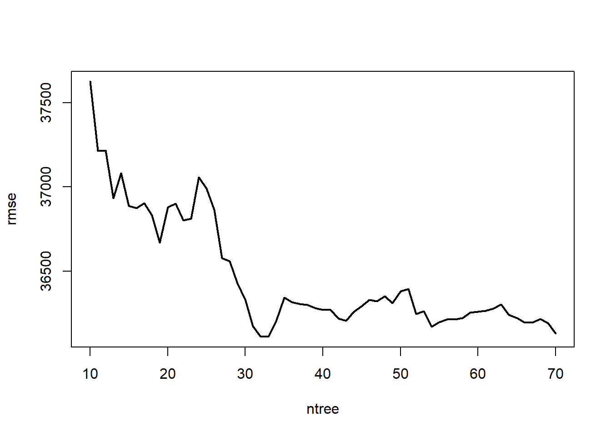
We can also use caret to do some bagging. caret is good because it:
- Is easier to perform cross-validation
- We can assess variable importance
Let’s perform a 10-fold cross-validated model.
ctrl <- trainControl(method = "cv", number = 10)
bagged_cv <- train(
Sale_Price ~ .,
data = ames_train,
method = "treebag",
trControl = ctrl,
importance = TRUE
)
bagged_cv## Bagged CART
##
## 2051 samples
## 80 predictor
##
## No pre-processing
## Resampling: Cross-Validated (10 fold)
## Summary of sample sizes: 1846, 1845, 1845, 1847, 1847, 1845, ...
## Resampling results:
##
## RMSE Rsquared MAE
## 36625.8 0.7909732 24276.46plot(varImp(bagged_cv), 20)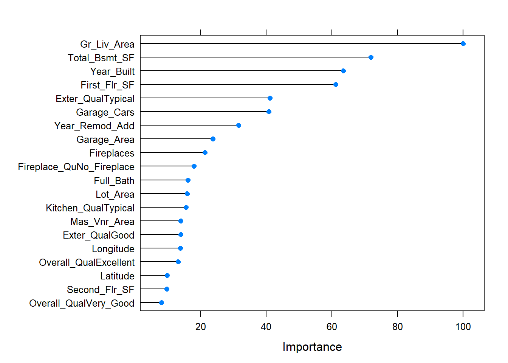
The predictors with the largest average impact to SSE are considered most important. The importance value is simply the relative mean decrease in SSE compared to the most important variable (provides a 0-100 scale).
pred <- predict(bagged_cv, ames_test)
rmse(pred, ames_test$Sale_Price)## [1] 35177.353.2 Random Forests
3.2.1 Overview
And here we are, the title of our presentation. Random Forests are very popular machine learning algorithm. One can think of Random Forests as a variation on bagging. The primary difference?
- Bagging uses the average prediction of many bootstrapped models.
- Random Forest also does this, but also selects a random subset of predictor features at each candidate split.
This helps deal with the correlation issue present in bagging and helps further reduce variance and stabilize our predictive model.
 Source: (Support 2018)
Source: (Support 2018)
3.2.2 Example: Random Forest on the Ames Housing Data
3.2.2.1 Model Development
There are over twenty different packages we can use for random forest analysis, we will be going over a few.
library(rsample)
library(randomForest)
library(ranger)
library(caret)
library(h2o)
library(AmesHousing)Let’s set our seed and split our data like the previous examples!
set.seed(123)
ames_split <- initial_split(AmesHousing::make_ames(), prop = .7)
ames_train <- training(ames_split)
ames_test <- testing(ames_split)Let’s go over the basic steps for random forest analysis one more time. Given our training data set we:
- Select a number of trees to build (ntrees)
- For i = 1 to ntrees we:
- Generate a bootstrap sample of the original data.
- Grow a regression tree to the bootstrapped data
- For each split we:
- Select m variables at random from all p variables
- Pick the best variable/split-point among the m
- Split the node into two child nodes
- Use typical tree model stopping criteria to determine when a tree is complete (but do not prune)
- Repeat the process for each tree
Let’s run a basic random forest model! The default number of trees used is 500 and the default m value is features/3.
set.seed(123)
m1 <- randomForest(
formula = Sale_Price ~ .,
data = ames_train
)
m1##
## Call:
## randomForest(formula = Sale_Price ~ ., data = ames_train)
## Type of random forest: regression
## Number of trees: 500
## No. of variables tried at each split: 26
##
## Mean of squared residuals: 639516350
## % Var explained: 89.7If we plot m1 we can see the error rate as we average across more trees.
plot(m1)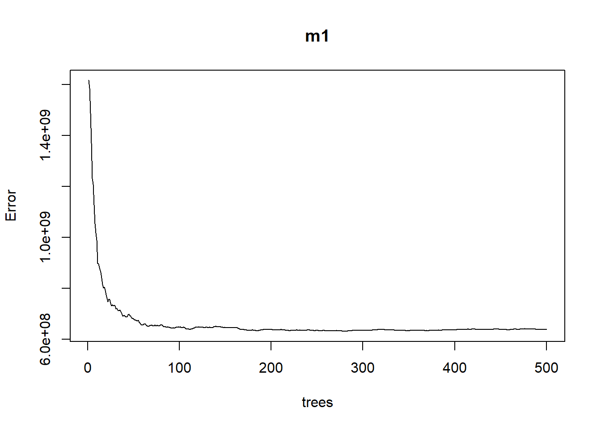
The plotted error rate is based on the OOB sample error and can be accessed as follows:
which.min(m1$mse)## [1] 280sqrt(m1$mse[which.min(m1$mse)])## [1] 25135.883.2.2.2 Tuning
Tuning random forest models are fairly easy since there are only a few tuning parameters. Most packages will have the following tuning parameters:
ntree: Number of treesmtry: The number of variables to randomly sample at each splitsampsize: The number of samples to train on. The default is 63.25% of the training set.nodesize: The minimum number of samples within the terminal nodes.maxnodes: Maximum number of terminal nodes.
If we want to tune just mtry, we can use randomForest::tuneRF. tuneRF will start at a value of mtry that you input and increase the amount until the OOB error stops improving by an amount that you specify.
features <- setdiff(names(ames_train), "Sale_Price")
set.seed(123)
m2 <- tuneRF(
x = ames_train[features],
y = ames_train$Sale_Price,
ntreeTry = 500,
mtryStart = 5,
stepFactor = 1.5,
improve = 0.01,
trace = FALSE # to not show real-time progress
)## -0.04236505 0.01
## 0.0614441 0.01
## 0.02425961 0.01
## 0.06634214 0.01
## 0.02149491 0.01
## -0.02257957 0.01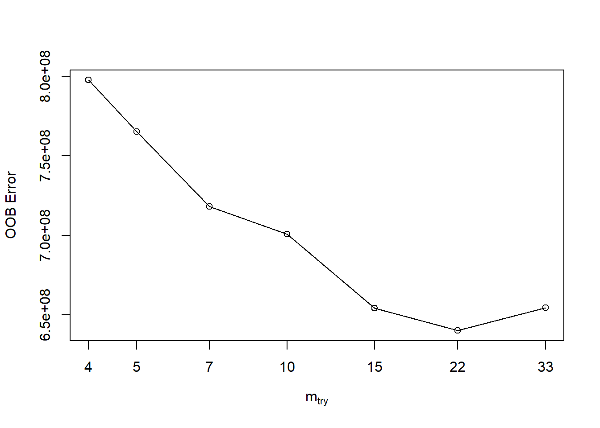
In order to preform a larger search of optimal parameters, we will have to use the ranger function. This package is a c++ implementation of Brieman’s random forest algorithm. Here are the changes in speed between the two methods.
system.time(
ames_randomForest <- randomForest(
formula = Sale_Price ~ .,
data = ames_train,
ntree = 500,
mtry = floor(length(features) / 3)
)
)## user system elapsed
## 50.73 0.01 50.75system.time(
ames_ranger <- ranger(
formula = Sale_Price ~ .,
data = ames_train,
num.trees = 500,
mtry = floor(length(features) / 3)
)
)## user system elapsed
## 8.14 0.11 0.63Let’s create a grid of parameters with ranger!!!
hyper_grid <- expand.grid(
mtry = seq(20, 30, by = 2),
node_size = seq(3, 9, by = 2),
sampe_size = c(.55, .632, .70, .80),
OOB_RMSE = 0
)
nrow(hyper_grid)## [1] 96Now, we can loop through the grid. Make sure to set your seed so we consistently sample the same observations for each sample size and make it more clear the impact that each change makes.
for(i in 1:nrow(hyper_grid)) {
model <- ranger(
formula = Sale_Price ~ .,
data = ames_train,
num.trees = 500,
mtry = hyper_grid$mtry[i],
min.node.size = hyper_grid$node_size[i],
sample.fraction = hyper_grid$sampe_size[i],
seed = 123
)
hyper_grid$OOB_RMSE[i] <- sqrt(model$prediction.error)
}
hyper_grid %>%
dplyr::arrange(OOB_RMSE) %>%
head(10)## mtry node_size sampe_size OOB_RMSE
## 1 28 3 0.8 25477.32
## 2 28 5 0.8 25543.14
## 3 28 7 0.8 25689.05
## 4 28 9 0.8 25780.86
## 5 30 3 0.8 25818.27
## 6 24 3 0.8 25838.55
## 7 26 3 0.8 25839.71
## 8 20 3 0.8 25862.25
## 9 30 5 0.8 25884.35
## 10 24 5 0.8 25895.22Let’s run the best model we found multiple times to get a better understanding of the error rate.
OOB_RMSE <- vector(mode = "numeric", length = 100)
for(i in seq_along(OOB_RMSE)) {
optimal_ranger <- ranger(
formula = Sale_Price ~ .,
data = ames_train,
num.trees = 500,
mtry = 28,
min.node.size = 3,
sample.fraction = .8,
importance = 'impurity'
)
OOB_RMSE[i] <- sqrt(optimal_ranger$prediction.error)
}
hist(OOB_RMSE, breaks = 20)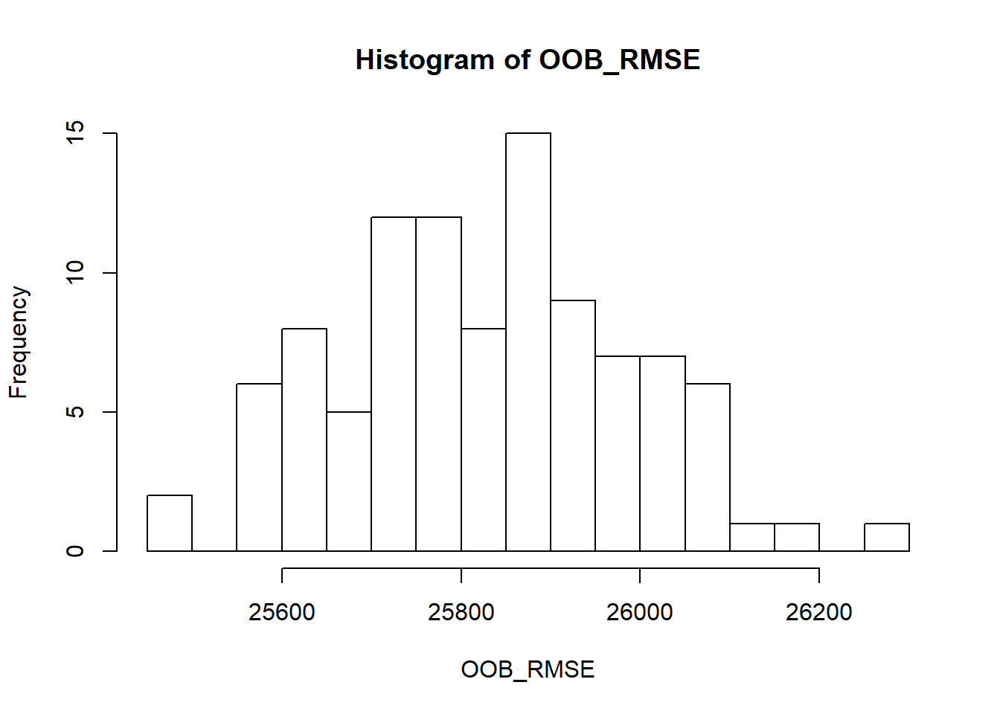
We set importance to impurity in this example, this means we can assess variable importance.
Variable importance is measured by recording the decrease in MSE each time a variable is used as a node split in a tree. The remaining error left in predictive accuracy after a node split is known as node impurity and a variable that reduces this impurity is considered more important than those variables that do not. Consequently, we accumulate the reduction in MSE for each variable across all the trees and the variable with the greatest accumulated impact is considered the more important, or impactful.
plot(optimal_ranger$variable.importance)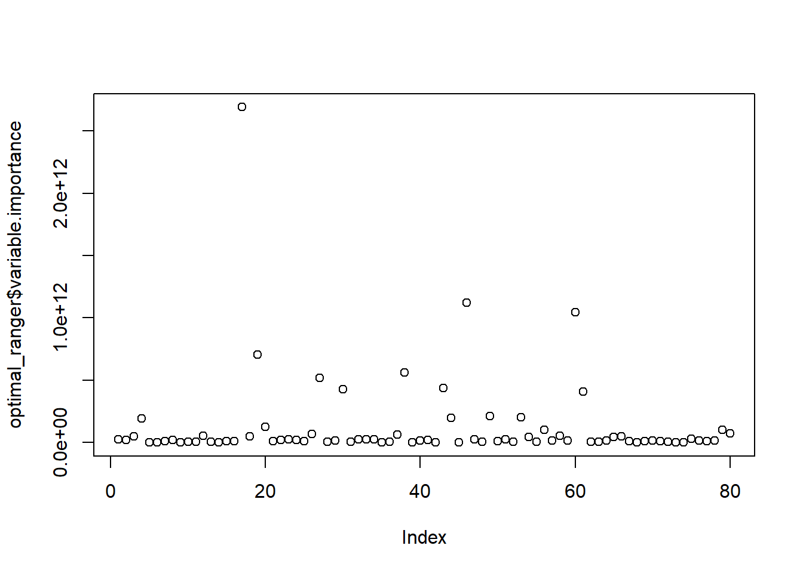
which.max(optimal_ranger$variable.importance)## Overall_Qual
## 17which.min(optimal_ranger$variable.importance)## Utilities
## 9There are other ways we can run random forest models that take even less time than ranger. One such way is through the h2o package. This package is a java-based interface that provides parallel distributed algorithms. Let’s start up h2o!!
h2o.no_progress()
h2o.init(max_mem_size = "5g")##
## H2O is not running yet, starting it now...
##
## Note: In case of errors look at the following log files:
## C:\Users\KSHOEM~1\AppData\Local\Temp\RtmpYHCOda/h2o_kshoemaker_started_from_r.out
## C:\Users\KSHOEM~1\AppData\Local\Temp\RtmpYHCOda/h2o_kshoemaker_started_from_r.err
##
##
## Starting H2O JVM and connecting: Connection successful!
##
## R is connected to the H2O cluster:
## H2O cluster uptime: 1 seconds 917 milliseconds
## H2O cluster timezone: America/Los_Angeles
## H2O data parsing timezone: UTC
## H2O cluster version: 3.26.0.2
## H2O cluster version age: 4 months !!!
## H2O cluster name: H2O_started_from_R_kshoemaker_oor778
## H2O cluster total nodes: 1
## H2O cluster total memory: 4.44 GB
## H2O cluster total cores: 16
## H2O cluster allowed cores: 16
## H2O cluster healthy: TRUE
## H2O Connection ip: localhost
## H2O Connection port: 54321
## H2O Connection proxy: NA
## H2O Internal Security: FALSE
## H2O API Extensions: Amazon S3, Algos, AutoML, Core V3, Core V4
## R Version: R version 3.6.1 (2019-07-05)## Warning in h2o.clusterInfo():
## Your H2O cluster version is too old (4 months)!
## Please download and install the latest version from http://h2o.ai/download/Let’s try a comprehensive (full cartesian) grid search using h2o.
y <- "Sale_Price"
x <- setdiff(names(ames_train), y)
train.h2o <- as.h2o(ames_train)
hyper_grid.h2o <- list(
ntrees = seq(200, 500, by = 100),
mtries = seq(20, 30, by = 2),
sample_rate = c(.55, .632, .70, .80)
)
grid <- h2o.grid(
algorithm = "randomForest",
grid_id = "rf_grid",
x = x,
y = y,
training_frame = train.h2o,
hyper_params = hyper_grid.h2o,
search_criteria = list(strategy = "Cartesian")
)
grid_perf <- h2o.getGrid(
grid_id = "rf_grid",
sort_by = "mse",
decreasing = FALSE
)
print(grid_perf)This method obtains a model with a lower OOB RMSE, this is because some of the default settings regarding minimum node size, tree depth, etc. are more “generous” than ranger and randomForest (i.e. h2o has a default minimum node size of 1 whereas ranger and randomForest default settings are 5).
If we want to do this even faster, we can use the RandomDiscrete function. This will jump from one random combination to another and stop once a certain level of improvement has been made, certain amount of time has been exceeded, or a certain amount of models have been ran. While not able to find the best model, it finds a pretty good model.
y <- "Sale_Price"
x <- setdiff(names(ames_train), y)
train.h2o <- as.h2o(ames_train)
hyper_grid.h2o <- list(
ntrees = seq(200, 500, by = 150),
mtries = seq(15, 35, by = 10),
max_depth = seq(20, 40, by = 5),
min_rows = seq(1, 5, by = 2),
nbins = seq(10, 30, by = 5),
sample_rate = c(.55, .632, .75)
)
search_criteria <- list(
strategy = "RandomDiscrete",
stopping_metric = "mse",
stopping_tolerance = 0.005,
stopping_rounds = 10,
max_runtime_secs = 10*60
)
random_grid <- h2o.grid(
algorithm = "randomForest",
grid_id = "rf_grid2",
x = x,
y = y,
training_frame = train.h2o,
hyper_params = hyper_grid.h2o,
search_criteria = search_criteria
)
grid_perf2 <- h2o.getGrid(
grid_id = "rf_grid2",
sort_by = "mse",
decreasing = FALSE
)
print(grid_perf2)## H2O Grid Details
## ================
##
## Grid ID: rf_grid2
## Used hyper parameters:
## - max_depth
## - min_rows
## - mtries
## - nbins
## - ntrees
## - sample_rate
## Number of models: 40
## Number of failed models: 0
##
## Hyper-Parameter Search Summary: ordered by increasing mse
## max_depth min_rows mtries nbins ntrees sample_rate model_ids
## 1 40 1.0 35 25 350 0.75 rf_grid2_model_35
## 2 20 1.0 25 15 350 0.75 rf_grid2_model_10
## 3 35 1.0 25 30 350 0.75 rf_grid2_model_37
## 4 40 1.0 15 15 350 0.75 rf_grid2_model_30
## 5 20 1.0 35 10 500 0.75 rf_grid2_model_8
## mse
## 1 6.127801029473622E8
## 2 6.132440095542786E8
## 3 6.172964879155214E8
## 4 6.229006088981339E8
## 5 6.248965258676519E8
##
## ---
## max_depth min_rows mtries nbins ntrees sample_rate model_ids
## 35 25 5.0 25 30 350 0.632 rf_grid2_model_12
## 36 30 5.0 25 10 200 0.632 rf_grid2_model_28
## 37 35 5.0 35 30 350 0.55 rf_grid2_model_22
## 38 40 5.0 15 15 350 0.632 rf_grid2_model_26
## 39 20 5.0 15 30 500 0.55 rf_grid2_model_29
## 40 30 1.0 35 30 350 0.632 rf_grid2_model_40
## mse
## 35 7.119339034273456E8
## 36 7.133293817672838E8
## 37 7.189580157453196E8
## 38 7.229833710160284E8
## 39 7.341871320679325E8
## 40 7.882606522955607E8Once we find our best model, we can run it with our test data and calculate RMSE!!
best_model_id <- grid_perf2@model_ids[[1]]
best_model <- h2o.getModel(best_model_id)
ames_test.h2o <- as.h2o(ames_test)
best_model_perf <- h2o.performance(model = best_model, newdata = ames_test.h2o)
h2o.mse(best_model_perf) %>% sqrt()## [1] 24386.26Now we can predict values using each of the three techniques that we used!!!!
pred_randomForest <- predict(ames_randomForest, ames_test)
head(pred_randomForest)## 1 2 3 4 5 6
## 129459.5 185526.7 263271.6 196375.7 176455.2 392007.5pred_ranger <- predict(ames_ranger, ames_test)
head(pred_ranger$predictions)## [1] 129130.5 186123.7 269912.0 198751.7 176939.0 395345.4pred_h2o <- predict(best_model, ames_test.h2o)## Warning in doTryCatch(return(expr), name, parentenv, handler): Test/
## Validation dataset column 'Utilities' has levels not trained on: [NoSeWa]## Warning in doTryCatch(return(expr), name, parentenv, handler): Test/
## Validation dataset column 'Neighborhood' has levels not trained on:
## [Landmark]## Warning in doTryCatch(return(expr), name, parentenv, handler): Test/
## Validation dataset column 'Condition_2' has levels not trained on: [RRAe,
## RRAn]## Warning in doTryCatch(return(expr), name, parentenv, handler): Test/
## Validation dataset column 'Exterior_1st' has levels not trained on:
## [ImStucc]## Warning in doTryCatch(return(expr), name, parentenv, handler): Test/
## Validation dataset column 'Bsmt_Qual' has levels not trained on: [Poor]## Warning in doTryCatch(return(expr), name, parentenv, handler): Test/
## Validation dataset column 'Kitchen_Qual' has levels not trained on: [Poor]## Warning in doTryCatch(return(expr), name, parentenv, handler): Test/
## Validation dataset column 'Functional' has levels not trained on: [Sev]## Warning in doTryCatch(return(expr), name, parentenv, handler): Test/
## Validation dataset column 'Garage_Qual' has levels not trained on:
## [Excellent]head(pred_h2o)## predict
## 1 128126.5
## 2 182538.8
## 3 263480.6
## 4 195616.4
## 5 176408.3
## 6 386656.8References
Breiman, J. H.; Olshen, Leo; Friedman. 1984. Classification and Regression Trees. Monterey, CA: Wadsworth & Brooks/Cole Advanced Books & Software.
Support, Global Software. 2018. “Random Forest Classifier – Machine Learning.” 2018. https://www.globalsoftwaresupport.com/random-forest-classifier/.